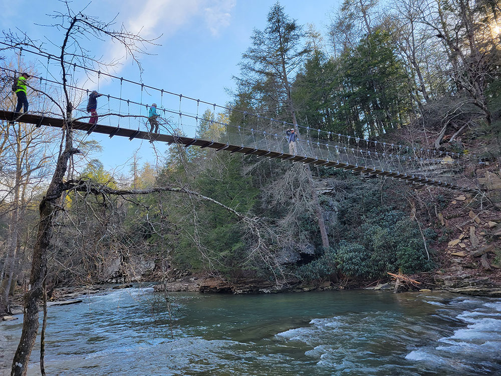
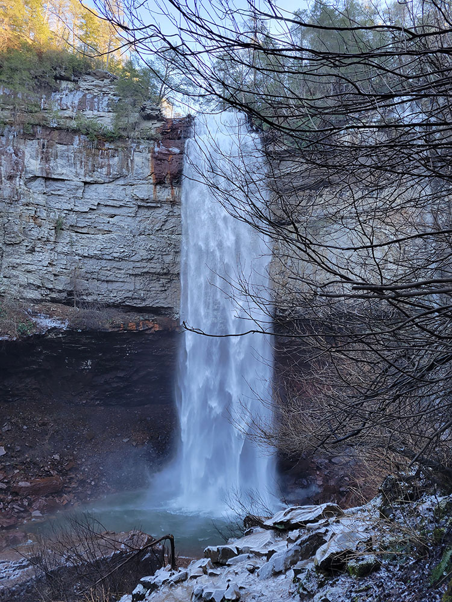
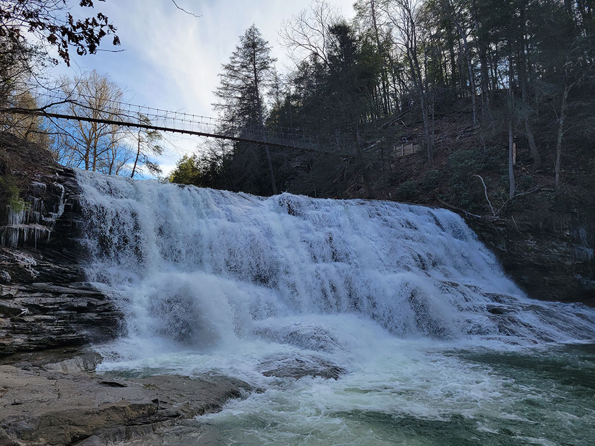
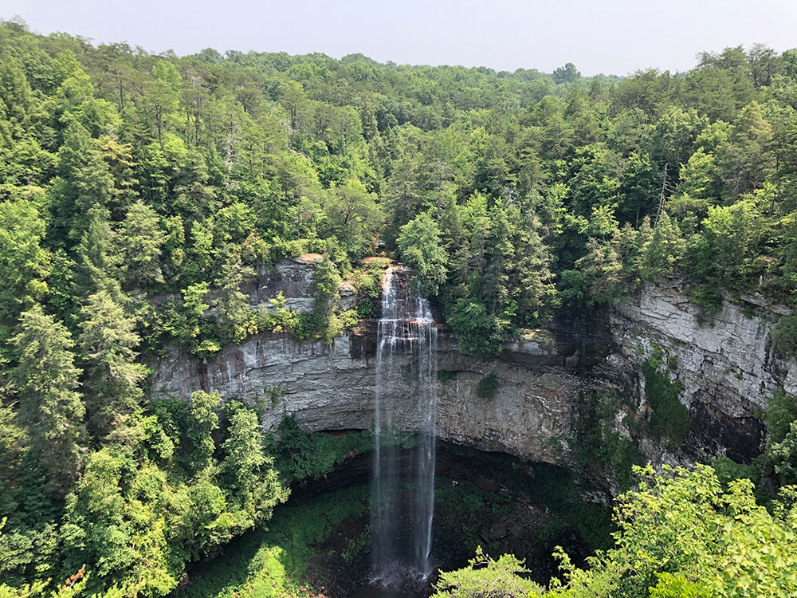

26,000-acre (110 km2) park centered on the upper Cane Creek Gorge, an area known for its unique geological formations and scenic waterfalls including the park's namesake the 256-foot (78 m) Fall Creek Falls, the highest free-fall waterfall east of the Mississippi River
General Information
Day-use areas close at sunset
Roads leading to certain waterfall areas may be gated after dark
No admission fee required
Summer: Full access to trails, lakes, and recreation areas
Fall: Spectacular foliage across the Cumberland Plateau
Winter: Fewer crowds and excellent waterfall viewing opportunities
How to Get There
From Spencer, Tennessee (5 mi): Take TN-30 E from downtown Spencer, turn onto TN-284, and follow the signs directly into Fall Creek Falls State Park to reach the visitor facilities and waterfall areas.
Overview
Fall Creek Falls State Park is a Tennessee state resort park of more than 26,000 acres in Van Buren and Bledsoe counties, centered on the upper Cane Creek Gorge on the Cumberland Plateau. Its namesake, the 256-foot Fall Creek Falls, is among the tallest free-fall waterfalls in the eastern United States. The park dates to the 1930s and is now one of the largest and most visited in Tennessee, protecting gorges, forests, lakes, caves and a number of waterfalls. Visitors come for the waterfalls and overlooks, hiking, swimming, fishing, golf, camping and the chance to stay overnight in a scenic natural setting.
Access
The park is near the town of Spencer, Tennessee, on the Cumberland Plateau, and is reached by State Routes 30 and 284. It is roughly an hour and a half to two hours by car from Nashville, Chattanooga and Knoxville. Most visitors arrive by car, and the roads inside the park lead to the major overlooks, trailheads, campgrounds and the lake. Cell service can be limited in the gorges, and parking at the main falls overlook can fill on busy weekends, so arrive early.
Seasons
Spring is a popular time, with strong waterfall flow after rain, wildflowers and mild temperatures. Summer is warm and humid, the busiest season for swimming, camping and family trips, and flows over the falls can drop during dry spells. Fall is the season for colorful foliage across the Cumberland Plateau, with comfortable hiking weather and good views from the overlooks. Winter is quiet and cold, with occasional ice that can form on the rocks and falls, and some trails can be slick or temporarily closed.
Things to Do
See Fall Creek Falls
The park's signature attraction is the 256-foot Fall Creek Falls, one of the tallest waterfalls in the eastern United States. Multiple overlooks provide dramatic views of the waterfall and surrounding gorge.
Visit Multiple Waterfalls
In addition to Fall Creek Falls, visitors can explore Cane Creek Falls, Cane Creek Cascades, Piney Falls, Rockhouse Falls, Coon Creek Falls, and several smaller waterfalls throughout the park.
Explore Scenic Gorges and Overlooks
The park contains deep gorges, sandstone cliffs, and overlooks that provide sweeping views of the Cumberland Plateau's rugged landscape.
Walk the Suspension Bridge
A suspension bridge spans Cane Creek Gorge, offering scenic views of the creek, waterfalls, and surrounding forest while connecting visitors to additional trails and overlooks.
Visit the Betty Dunn Nature Center
The nature center features exhibits on local wildlife, geology, ecosystems, and the natural history of the Cumberland Plateau.
Top Trails
Fall Creek Falls Base Trail
Length: 0.7 miles round trip
Elevation Gain: Approximately 400 feet
Difficulty: Moderate to Strenuous
This steep trail descends into the gorge and leads to the base of the spectacular 256-foot Fall Creek Falls, providing one of the park's most rewarding experiences.
Cane Creek Falls Gorge Trail
Length: 2.0 miles round trip
Elevation Gain: Approximately 500 feet
Difficulty: Moderate
A scenic route that passes through the gorge beneath Cane Creek Falls and provides close-up views of waterfalls, rock formations, and stream corridors.
Piney Falls Trail
Length: 2.0 miles round trip
Elevation Gain: Approximately 350 feet
Difficulty: Moderate
This popular trail leads to Piney Falls, one of the park's most scenic waterfalls, while passing through beautiful hardwood forest.
Woodland Trail
Length: 1.0 mile loop
Elevation Gain: Minimal
Difficulty: Easy
A family-friendly nature trail offering interpretive signs and opportunities to learn about the local ecosystem.
Cable Trail
Length: 0.5 miles round trip
Elevation Gain: Approximately 200 feet
Difficulty: Moderate
A short but steep trail that utilizes cables and stairs to help visitors reach the gorge floor near Cane Creek Falls.
Upper Loop Trail
Length: 3.5 miles loop
Elevation Gain: Approximately 450 feet
Difficulty: Moderate
This trail explores several scenic sections of the park, including overlooks, forests, and gorge views while providing a longer hiking experience.
Visitor Centers
The Betty Dunn Nature Center has exhibits on the wildlife, geology and natural history of the Cumberland Plateau and offers programs in season. The park also has an information and welcome area, along with overlooks near the main falls where visitors can start their tour. Hours vary by season, so check the Tennessee State Parks website before you visit.
Camping and Lodging
Fall Creek Falls is a resort park, and overnight options in the park include cabins and a large campground, along with an inn and conference center whose availability should be confirmed with Tennessee State Parks. Reservations are recommended in summer and fall. Outside the park, Spencer, Pikeville and Dunlap have smaller motels and cabin rentals. Within one to two hours, Crossville (home of Cumberland Mountain State Park), McMinnville, Cookeville and Chattanooga offer more hotels, cabins and campgrounds.
Sources: Fall Creek Falls State Park official Tennessee State Parks information, park highlights, waterfalls, golf course, nature center, accessibility features, and visitor resources. [1](https://npplan.com/parks-by-state/tennessee/shiloh-national-military-park-park-at-a-glance/shiloh-national-military-park-shiloh-battlefield-tour-park-version/) Additional trail and visitor information verified through Fall Creek Falls park resources and visitor guides. [2](https://reserve.tnstateparks.com/cummins-falls/permits)[3](https://alexysabroad.com/cummins-falls-state-park-guide/)
Geography
The Cane Creek Gorge presents as a large gash in the western edge of the Cumberland Plateau, stretching for some 15 miles (24 km) from the Cane Creek Cascades to Cane Creek's mouth along the Caney Fork River. Cane Creek rises atop Little Mountain — which lines the plateau's eastern edge above Sequatchie Valley — and winds northward across the plateau.
Just beyond its source, Cane Creek slowly gains strength as it absorbs Meadow Creek and several smaller streams. As the creek enters the gorge, it drops several hundred feet in less than a mile, including 45 feet (14 m) over Cane Creek Cascades and 85 feet (26 m) over Cane Creek Falls. A few hundred meters north of Cane Creek Falls, Rockhouse Creek spills 125 feet (38 m) over a plunge waterfall. Over the next half-mile, Cane Creek absorbs Fall Creek and Piney Creek, both of which enter from smaller gorges to the immediate west. During this stretch, part of the creek disappears underground into limestone sinks and reemerges at a spring known as "Crusher Hole." Cane Creek continues to lose elevation before steadying near its confluence with Dry Fork. Beyond Dry Fork, the creek gradually descends to the Highland Rim, where it empties into the Caney Fork River.
The man-made Fall Creek Falls Lake, controlled by a dam, assures continuing flow of water to Fall Creek Falls. The lake dominates the park's southern section.
Fall Creek Falls, a 256-foot (78 m) plunge waterfall located just west of the creek's confluence with Cane Creek. A short trail leads from the parking lot atop the plateau down to the base of the gorge, giving access to the waterfall's plunge pool.
Cane Creek Falls, an 85-foot (26 m) plunge waterfall located along Cane Creek, above the creek's confluence with Rockhouse Creek and Fall Creek. The waterfall is visible from the Gorge Trail and from the base of the Cane Creek Gorge, which can be accessed via the Cable Trail.
Cane Creek Cascades, a 45-foot (14 m) cascade located along Cane Creek, just above Cane Creek Falls.
Rockhouse Falls, a 125-foot (38 m) plunge waterfall that marks Rockhouse Creek's confluence with Cane Creek. The waterfall, which shares a plunge pool with Cane Creek Falls, is visible from the Gorge Trail and from the base of the Cane Creek Gorge.
Piney Creek Falls, a 95-foot (29 m) waterfall located along Piney Creek, a mile or so above its confluence with Cane Creek. Trails lead to the base of the falls and an overlook above the falls.
Coon Creek Falls, a 250-foot (76 m) plunge waterfall that drops into the Fall Creek Gorge, nearly adjacent Fall Creek Falls. Its proximity to Fall Creek Falls renders it less conspicuous.
Lost Creek Falls, a 60-foot (18 m) plunge waterfall where water emerges from a cave above the falls and disappears from the pool at the base.
Cane Creek Overlook, located just off the Gorge Trail, looks out over Cane Creek Falls and Rockhouse Falls.
Cane Creek Gorge Overlook, located just off the Gorge Trail, looks northward across the Cane Creek Gorge.
Rocky Point Overlook, located just off the Gorge Trail on an exposed cliff, looks northward across the Cane Creek Gorge.
Millikan's Overlook, located just off the road in the Piney Creek section of the park, looks northward across the Cane Creek Gorge, near the confluence of Piney Creek and Cane Creek.
Buzzard's Roost, a cliff located near Millikan's Overlook.
An overlook adjacent to the Fall Creek Falls parking lot looks down into the Fall Creek Gorge.
Along with waterfalls and overlooks, Fall Creek Falls State Park has the second-most caves of any park in the eastern U.S., behind Mammoth Cave National Park.
Rumbling Falls Cave, which has the second largest cave chamber in the United States, is located in the park's Dry Fork section, near Spencer.
Camps Gulf Cave is another large cave located in the park that contains very large chambers.
Lost Creek Cave has five entrances, contains a waterfall and 7 miles (11.3 km) of passageways.
Park facilities and management
Fall Creek Falls State Park is open year-round and is managed by the Tennessee Department of Environment and Conservation. Park facilities currently include cabins, campgrounds, and a snack bar.
Inn
The Fall Creek Falls Inn and Conference Center offered 144 guest rooms and over 5,000 square feet (460 m2) of banquet space in five conference rooms, which accommodated up to 400 people. The buildings were designed with a brutalist architecture, having a combination of dark brick, and gray concrete with an exposed aggregate of smooth white, beige, tan, and brownish river stones.
This article uses material from the Wikipedia article "Fall Creek Falls State Park", which is released under the Creative Commons Attribution-Share-Alike License 3.0



